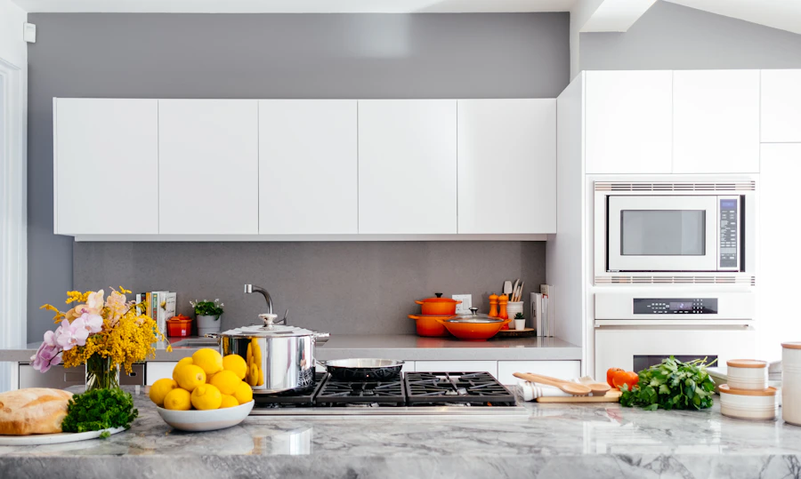

Professional House & Bond Cleaning in New Farm
Local, vetted domestic and bond cleaning for New Farm homes. Whether it's a regular clean, a one-off visit, or a complete move-out bond clean, our Brisbane-based team gets it done right using eco-friendly products and police-checked cleaners.

House Cleaning Near Brisbane Powerhouse & New Farm Park
From character Queenslanders to riverside apartments near the Brisbane Powerhouse and James Street, we tailor each clean to the home — dusting, vacuuming, mopping, kitchens, and living spaces, done by the same trusted local team every visit.
- Careful cleaning of timber floors, high ceilings & sash windows
- Kitchen wipe-down, sink scrub & benchtop degreasing
- Dusting of skirting boards, furniture & window sills
- Flexible weekly, fortnightly, or one-off bookings
Toilet & Bathroom Deep Sanitising
Bathrooms receive our dedicated hospital-grade sanitisation treatment:
- Toilet bowl, seat & cistern descale
- Shower screen, tile & grout deep clean
- Hospital-grade disinfectant treatment
- Mirrors, vanities & tapware polished
Fixed Upfront Pricing for New Farm
Fair, transparent pricing with no hidden charges. All supplies included.
Frequently Asked Questions - New Farm Cleaning
Do you clean character Queenslanders and apartments in New Farm?
Yes! We clean heritage Queenslanders near New Farm Park as well as modern luxury apartments along Moray Street and James Street. Our products are eco-friendly and safe for timber and stone surfaces.
What is included in a New Farm bond clean?
Our bond clean includes oven degreasing, internal cabinetry, window glass, tracks, walls spot cleaned, skirting boards, ceiling fans, and thorough bathroom descaling and sanitisation to ensure your full bond refund.
Can I book weekly or fortnightly domestic cleaning in New Farm?
Absolutely. Most of our New Farm clients choose a regular fortnightly or weekly visit to keep their homes looking pristine.
Cleaning Services in Surrounding Suburbs
Serving all surrounding Brisbane Inner City & East suburbs: